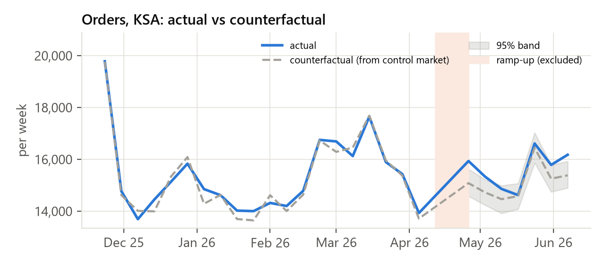

Did Web CAPI on Meta in KSA bring more orders, or only more conversions visible to the platform?
Yes, a modest incremental effect: orders rose +3.2% against the UAE control (95% interval +1.7% to +4.6%), about 3,410 extra orders and $289k of revenue over the read. Meta-reported conversions rose much more, +18.4%: most of that is signal recovered, which helps bidding but is not extra business on its own.
52 weeks of weekly orders in KSA and UAE before go-live on 12 Apr 2026, from the client's own system. Reported CPA was $25.78 on the 7-day click + 1-day view setting.
Web CAPI on Meta in KSA only, deduplicated with the pixel on event_id. The 10-day ramp-up (learning phase) is excluded from every comparison. UAE was not migrated during the read and serves as the control.
Read window: 7 full weeks, 26 Apr 2026 to 13 Jun 2026, fixed before the read.

The model follows the ratio between KSA and UAE, which share the calendar, so Ramadan, Eid and sale periods cancel out; holidays that hit only one market are modelled. 0 of 23 in-time placebos (fake go-live dates before the real one) produced an effect this large. Platform conversions are read on 7-day click, by click date, on complete weeks only.
EMQ 5.9/10 before, 7.6/10 after; match rate 62% to 72%; event_id on 97% of server events, so deduplication works.
One market, 7 weeks: the interval is wide relative to the effect. The control market can drift for reasons of its own. The effect is measured on orders, not on margin.
Roll out to UAE with a staggered start by region and read it as a geo test; keep the attribution setting fixed for the quarter.